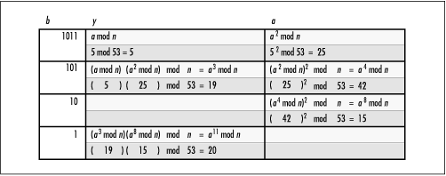

15.7 Implementation and Analysis of
RSA
Because
encryption with RSA requires little more than computing ab mod n, a basic implementation is
relatively simple: all we need is a function to perform
modular exponentiation. However, to make RSA secure, recall
that we must use large integers. This complicates things.
Specifically, all arithmetic must be performed with integers
that are twice the size of the keys. (We will see in a moment
that this doubling is required for the modular exponentiation
process.) Thus, if the keys are 200 decimal digits, we need an
abstract datatype that supports integers with at least 400
decimal digits.
Since support for large-integer arithmetic is
not provided in this book, the RSA implementation presented
here must depend on another library. Several are available.
Instead of providing this support, the datatype
Huge has been defined (see Example
15.1). In a secure
implementation we can typedef this to a large-integer abstract
datatype of our choice. The only other requirement is that we
replace each operator in expressions containing
Huge integers with operations defined for the
type. For purposes of illustration in the implementation
presented here, Huge is made a typedef to an
unsigned long integer, an intrinsic type that usually offers
10 decimal digits. This means that the implementation as it
exists in Example
15.4 supports keys up to only 5 decimal digits. Thus, the
implementation is functional, but it would not be considered
secure without redefining Huge to a larger
type.
15.7.1 rsa_encipher
The rsa_encipher operation (see Example
15.4) enciphers a block of plaintext using RSA. It does
this by calling the function modexp, which computes ab mod n, where a is the block of plaintext, and
b and n are members e and n of the public key. For efficiency,
modexp uses a method called
binary square and multiply to
perform modular exponentiation.
The binary square and multiply method avoids the
huge intermediate result produced by ab when a and b are both large. For example,
imagine computing ab mod n when a, b,
and n are all integers
containing 200 decimal digits. The result is a 40,000-digit
integer modulo a 200-digit integer! Since this eventually
yields an integer of 200 decimal digits, the goal is to avoid
the 40,000-digit intermediate result.
The binary square and multiply method
computes ab mod n primarily as the product of several
squares (see Figure
15.4). We start with the binary representation of b and process bits from the right.
For each bit in b, we square
a, take the result modulo n, and store this value back into
a. Each time we encounter a bit
in b that is 1, we multiply the
current value of a times
another register y (initially
1) and store the result back into y. Once we reach the most significant
bit in b, y contains the value of ab mod n. Throughout the process, the
largest value ever computed is a2. Therefore, if a is an integer containing 200
decimal digits, we never have to deal with integers larger
than 400 digits, which is a considerable improvement over the
40,000-digit number mentioned a moment ago. The shaded areas
of Figure
15.4 illustrate this process for 511 mod 53 =
48,828,125 mod 53 = 20. In this calculation, the largest value
we end up handling is 422 = 1764, as opposed to
511 = 48,828,125.
The runtime complexity of rsa_encipher is O (1) because all of the steps in
enciphering a block of data run in a constant amount of time.
Since the block size is constant, the loop in modexp runs in a constant amount of
time.

15.7.2 rsa_decipher
The rsa_decipher operation (see Example
15.4) deciphers a block of ciphertext enciphered using
RSA. It does this by calling the function modexp, which computes ab mod n, where a is the block of ciphertext, and
b and n are members d and n of the private key. This proceeds
in the same manner as described for rsa_encipher.
The runtime complexity of rsa_decipher is O (1) because all of the steps in
deciphering a block of data run in a constant amount of time.
Since the block size is constant, the loop in modexp runs in a constant amount of
time.
Example 15.4.
Implementation of RSA /*****************************************************************************
* *
* --------------------------------- rsa.c -------------------------------- *
* *
*****************************************************************************/
#include "encrypt.h"
/*****************************************************************************
* *
* -------------------------------- modexp -------------------------------- *
* *
*****************************************************************************/
static Huge modexp(Huge a, Huge b, Huge n) {
Huge y;
/*****************************************************************************
* *
* Compute pow(a, b) % n using the binary square and multiply method. *
* *
*****************************************************************************/
y = 1;
while (b != 0) {
/**************************************************************************
* *
* For each 1 in b, accumulate y. *
* *
**************************************************************************/
if (b & 1)
y = (y * a) % n;
/**************************************************************************
* *
* Square a for each bit in b. *
* *
**************************************************************************/
a = (a * a) % n;
/**************************************************************************
* *
* Prepare for the next bit in b. *
* *
**************************************************************************/
b = b >> 1;
}
return y;
}
/*****************************************************************************
* *
* ----------------------------- rsa_encipher ----------------------------- *
* *
*****************************************************************************/
void rsa_encipher(Huge plaintext, Huge *ciphertext, RsaPubKey pubkey) {
*ciphertext = modexp(plaintext, pubkey.e, pubkey.n);
return;
}
/*****************************************************************************
* *
* ----------------------------- rsa_decipher ----------------------------- *
* *
*****************************************************************************/
void rsa_decipher(Huge ciphertext, Huge *plaintext, RsaPriKey prikey) {
*plaintext = modexp(ciphertext, prikey.d, prikey.n);
return;
} |